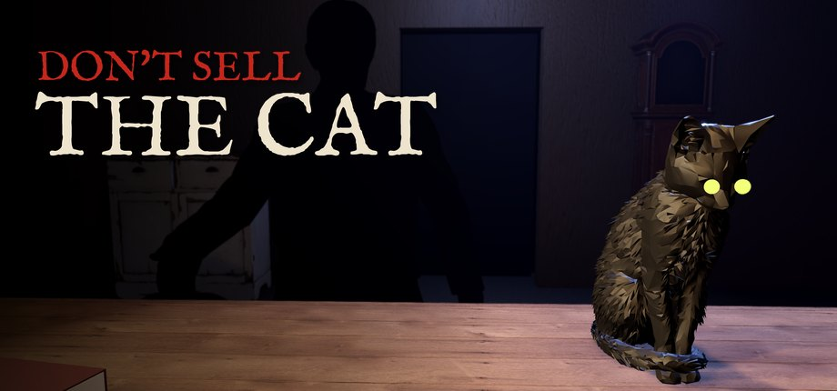

무료 · 오픈소스 · 애플 실리콘 맥
윈도우 게임을 맥에서.
애플 실리콘 맥에서 윈도우 게임을 하기 위한 무료 맥 앱입니다. 진짜 스팀, 배틀넷, 에픽, GOG GALAXY, EA 앱, 락스타, 유비소프트 커넥트, Xbox PC 런처를 각각 따로 된 Wine 환경에 설치하고, 설치된 게임을 한 라이브러리에 모아 보여 줍니다.
brew install BCD1210/soju/soju
- 스팀
- 배틀넷
- 에픽게임즈
- GOG GALAXY
- EA app
- Rockstar
- Ubisoft Connect
- Xbox PC

하는 일
진짜 런처
배틀넷·에픽·GOG는 CodeWeavers 소스로 만든 Wine 엔진과 애플 D3DMetal을 같이 씁니다. 스팀은 D3D11 게임용 DXMT가 들어간 Wine 11 환경을 따로 씁니다.
라이브러리 하나
모든 런처에 설치된 게임을 찾고, 스팀과 GOG에서 산 게임 목록을 가져옵니다.
스토어 검색
스팀, GOG, 마이크로소프트 스토어를 지역 가격으로 검색합니다.
Xbox PC
실험 기능입니다. 보유 게임과 게임 패스 게임을 가져와 Xodus 백엔드로 내려받습니다.
로그인, 구매, 게임 업데이트는 각 스토어가 그대로 맡습니다. 소주는 게임, 스토어 프로그램, 애플 게임 포팅 툴킷을 포함하지 않습니다.
직접 실행해 본 게임
M4 Pro 맥, macOS 26.5에서 확인했습니다. 다른 게임은 해 보기 전에는 모릅니다. 게임별로 되는지 보기 · 결과를 알려 주세요.
- 배틀넷디아블로 II: 레저렉션플레이 됨
온라인 플레이 됨. macOS 26.4 이상. 가이드
- 배틀넷스타크래프트: 리마스터플레이 됨
컴퓨터 상대 싱글 대전 시작까지 확인. 멀티플레이는 미확인. 가이드
- 에픽호그와트 레거시플레이 됨
D3DMetal로 설치·플레이 됨
- 스팀Guilt Free (Unity, D3D11)플레이 됨
DXMT 설정으로 플레이 됨
- Xbox PCRetro Classics메뉴까지
메인 화면까지 실행
- GOGGOG GALAXY런처만
로그인·라이브러리 됨, 게임은 아직 조금만 시험
커널 안티치트를 쓰는 게임은 실행되지 않습니다.
Didim Labs 게임

고양이는 팔지 마세요1958년 전당포 야간 카운터에서 보내는 일곱 밤. 확대경, UV 램프, 저울, 가게 고양이로 물건을 확인하고, 뒷문 셔터는 열지 마세요.설치
- 앱 받기
Soju-1.13.0-macos-arm64.zip을 받아 압축을 풀고 응용 프로그램 폴더로 옮깁니다.
- 런처 고르기
소주를 열고 Platforms에서 쓰는 런처를 고릅니다. 배틀넷·에픽·GOG는 애플 게임 포팅 툴킷을 쓰는데, 소주가 애플 파일을 받아 애플 서명을 확인한 뒤 설치합니다.
- 로그인하고 플레이
각 런처에서 평소처럼 로그인하면 설치된 게임이 라이브러리에 나타납니다.
터미널이 편하면 설치 스크립트나 Homebrew를 쓰세요. Rosetta 2, Xcode Command Line Tools, Homebrew가 필요합니다.
curl -fsSL https://didimlabs.com/install.sh | bash
# 또는
brew install BCD1210/soju/soju
soju installsoju doctor로 설치 상태를 점검하고 soju update로 업데이트합니다.
자주 묻는 질문
M1·M2·M3·M4 맥에서 윈도우 게임을 할 수 있나요?
게임에 따라 됩니다. 소주는 윈도우 런처를 Wine과 애플의 D3DMetal 또는 DXMT로 실행합니다. 디아블로 II: 레저렉션, 호그와트 레거시, Guilt Free를 M4 Pro·macOS 26.5에서 직접 플레이했습니다. 커널 안티치트를 쓰는 게임은 안 됩니다.
소주는 무료인가요?
네. GPL-3.0 오픈소스이고 무료입니다. 게임은 각 스토어에서 평소처럼 삽니다. Didim Labs가 만든 맥 게임은 소주 스토어 탭에서 팝니다.
macOS 버전은 무엇이 필요한가요?
소주 앱은 애플 실리콘 맥의 macOS 14 이상에서 돌아갑니다. 스팀 게임은 macOS 26 이상, 디아블로 II: 레저렉션은 macOS 26.4 이상이 필요합니다.
위스키(Whisky)나 크로스오버 대신 쓸 수 있나요?
비슷한 일을 합니다. 위스키는 개발이 멈췄고 크로스오버는 유료입니다. 소주는 무료이고, 공식 스토어 런처 실행에 맞춰져 있으며, CodeWeavers가 공개한 소스로 Wine 엔진을 만듭니다.
게임이 안 켜지면요?
soju doctor(디아2는 soju doctor d2r)를 실행해 보고 가이드를 확인한 뒤, 게임·맥 기종·macOS 버전·증상을 적어 이슈를 남겨 주세요.
맥에서 바로 해 보세요
소주는 무료 오픈소스입니다. 앱을 받아 쓰는 런처를 고르고, 어떤 게임이 되는지 알려 주세요.